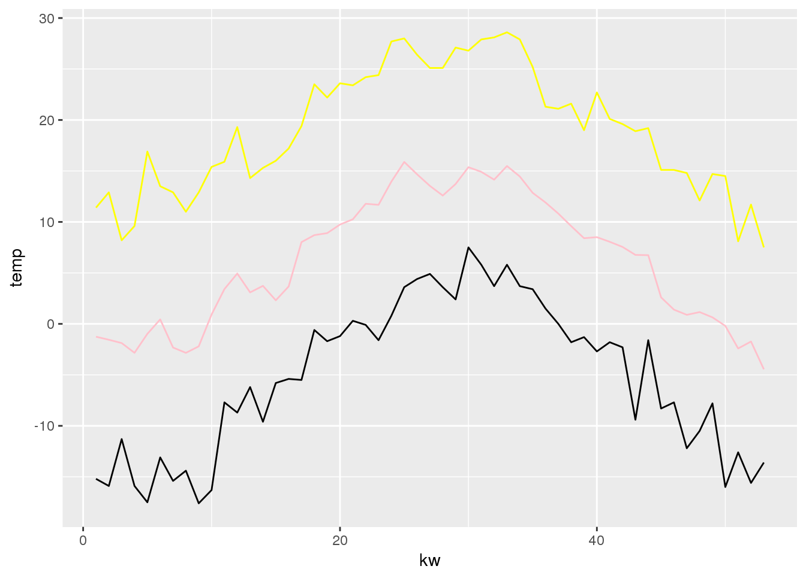
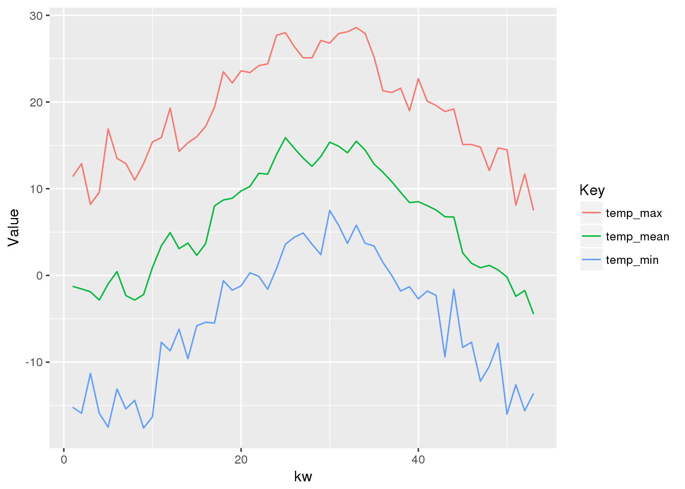

3.1 Demo: tidyverse
Hier möchten wir euch mit einer Sammlung von Tools vertraut machen, die spezifisch für das Daten prozessieren in Data Science entwickelt wurden. Der Prozess und das Modell ist hier3 schön beschrieben. Die Sammlung von Tools wird unter dem namen tidyverse vertrieben, welches wir ja schon zu Beginn der ersten Übung installiert und geladen haben. Die Tools erleichtern den Umgang mit Daten ungeheuer und haben sich mittlerweile zu einem “must have” im Umgang mit Daten in R entwickelt.
Wir können euch nicht sämtliche Möglichkeiten von tidyverse zeigen. Wir fokussieren uns deshalb auf einzelne Komponenten4 und zeigen ein paar Funktionalitäten, die wir oft verwenden und euch ggf. noch nicht bekannt sind. Wer sich vertieft mit dem Thema auseinandersetzen möchte, der sollte sich unbedingt das Buch Wickham and Grolemund (2017) beschaffen. Eine umfangreiche, aber nicht ganz vollständige Version gibt es online5, das vollständige eBook kann über die Bibliothek bezogen werden6.
3.1.1 Split-Apply-Combine
3.1.1.1 Tidyverse installieren und laden
Falls tidyverse noch nicht installiert ist:
install.packages("tidyverse")library(tidyverse)Mit library(tidyverse) werden nicht alle Packete geladen, die mit install.packages(tidyverse) intalliert wurden (warum?). Unter anderem muss lubridate noch separat geladen werden:
library(lubridate) 3.1.1.3 Kennwerte berechnen
Wir möchten den Mittelwert aller gemessenen Temperaturwerte berechnen. Dazu könnten wir folgenden Befehl verwenden:
mean(wetter$tre200h0, na.rm = T)
## [1] 8.962106Die option na.rm = T bedeutet, dass NA Werte von der Berechnung ausgeschlossen werden sollen.
Mit der selben Herangehensweise können diverse Werte berechnet werden (z.B. das Maximum (max()), Minimum (min()), Median (median()) u.v.m.).
Diese Herangehensweise funktioniert nur dann gut, wenn wir die Kennwerte über alle Beobachtungen (Zeilen) für eine Variable (Spalte) berechnen wollen. Sobald wir die Beobachtungen gruppieren wollen, wird es schwierig. Zum Beispiel, wenn wir die durchschnittliche Temperatur pro Jahr berechnen wollen.
3.1.1.4 Convenience Variablen
Um diese Aufgabe zu lösen, muss zuerst das “Jahr” berechnen können (das Jahr ist die convenience variabel). Hierfür brauchen wir die Funktion year() (von lubridate).
Nun kann kann die convenience Variable “Jahr” erstellt werden. Ohne dpylr wird eine neue Spalte wird folgendermassen hinzugefügt.
wetter$year <- year(wetter$datetime)Mit dplyr (siehe7) sieht der gleiche Befehl folgendermassen aus:
wetter <- mutate(wetter,year = year(datetime))Der grosse Vorteil von dplyr ist an dieser Stelle noch nicht ersichtlich. Dieser wird aber später klar.
3.1.1.5 Kennwerte nach Gruppen berechnen
Jetzt kann man die data.frame mithilfe der Spalte “Jahr” filtern.
mean(wetter$tre200h0[wetter$year == 2000], na.rm = T)
## [1] 9.281542Dies müssen wir pro Jahr wiederholen, was natürlich sehr umständlich ist, v.a. wenn man eine Vielzahl an Gruppen hat (z.B. Kalenderwochen statt Jahre). Deshalb nutzen wir das package dplyr. Damit geht die Aufgabe (Temperaturmittel pro Jahr berechnen) folgendermassen:
summarise(group_by(wetter,year),temp_mittel = mean(tre200h0, na.rm = T))
## # A tibble: 7 x 2
## year temp_mittel
## <dbl> <dbl>
## 1 2000 9.281542
## 2 2001 8.758285
## 3 2002 9.299305
## 4 2003 9.483360
## 5 2004 8.637853
## 6 2005 8.312291
## 7 NA NaN3.1.1.6 Verketten vs. verschachteln
Auf Deutsch übersetzt heisst die obige Operation folgendermassen:
- nimm den Datensatz
wetter - Bilde Gruppen pro Jahr (
group_by(wetter,year)) - Berechne das Temperaturmittel (
mean(tre200h0))
Diese Übersetzung R-> Deutsch unterscheidet sich vor allem darin, dass die Operation auf Deutsch verkettet ausgesprochen wird (Operation 1->2->3) während der Computer verschachtelt liest 3(2(1)). Um R näher an die gesprochene Sprache zu bringen, kann man den %>%-Operator verwenden (siehe8).
## # A tibble: 7 x 2
## year temp_mittel
## <dbl> <dbl>
## 1 2000 9.281542
## 2 2001 8.758285
## 3 2002 9.299305
## 4 2003 9.483360
## 5 2004 NA
## 6 2005 NA
## 7 NA NA
## # A tibble: 7 x 2
## year temp_mittel
## <dbl> <dbl>
## 1 2000 9.281542
## 2 2001 8.758285
## 3 2002 9.299305
## 4 2003 9.483360
## 5 2004 NA
## 6 2005 NA
## 7 NA NADieses Verketten mittels %>% macht ein Code einiges schreib- und leserfreundlicher, und wir werden ihn in den nachfolgenden Übungen verwenden. Dabei handelt es sich um das package magrittr, welches mit dem tidyverse mitgeliefert wird.
Zu dplyr und magrittrgibt es etliche Tutorials online (siehe9), deshalb werden wir diese Tools nicht in allen Details erläutern. Nur noch folgenden wichtigen Unterschied zu zwei wichtigen Funktionen in dpylr: mutate() und summarise().
summarise()fasst einen Datensatz zusammen. Dabei reduziert sich die Anzahl Beobachtungen (Zeilen) auf die Anzahl Gruppen (z.B. eine zusammengefasste Beobachtung (Zeile) pro Jahr). Zudem reduziert sich die Anzahl Variablen (Spalten) auf diejenigen, die in der “summarise” Funktion spezifiziert wurde (z.B.temp_mittel)- mit
mutatewird einedata.framevom Umfang her belassen, es werden lediglich zusätzliche Variablen (Spalten) hinzugefügt (siehe Beispiel unten)
# Maximal und minimal Temperatur pro Kalenderwoche
wetter %>% #1) nimm den Datensatz "wetter"
filter(stn == "ABO") %>% #2) filter auf Station namnes "ABO"
mutate(kw = week(datetime)) %>% #3) erstelle eine neue Spalte "kw"
group_by(kw) %>% #4) Nutze die neue Spalte um Guppen zu bilden
summarise(
temp_max = max(tre200h0, na.rm = T),#5) Berechne das Maximum
temp_min = min(tre200h0, na.rm = T) #6) Berechne das Minimum
)
## # A tibble: 53 x 3
## kw temp_max temp_min
## <dbl> <dbl> <dbl>
## 1 1 11.4 -15.2
## 2 2 12.9 -15.9
## 3 3 8.2 -11.3
## 4 4 9.6 -15.9
## 5 5 16.9 -17.5
## 6 6 13.5 -13.1
## 7 7 12.9 -15.4
## 8 8 11.0 -14.4
## 9 9 12.9 -17.6
## 10 10 15.4 -16.3
## # ... with 43 more rows3.1.1.7 Resultate plotten
Mit diesen Tools können wir nun auch eine neue Grafik plotten, ähnlich wie in der Übung 1. Dafür müssen wir die ganzen Operationen aber zuerst in einer Variabel speichern (bis jetzt hat R zwar alles schön berechnet, aber uns nur auf die Konsole ausgegeben).
wetter_sry <- wetter %>%
mutate(
kw = week(datetime)
) %>%
filter(stn == "ABO") %>%
group_by(kw) %>%
summarise(
temp_max = max(tre200h0),
temp_min = min(tre200h0),
temp_mean = mean(tre200h0)
) Dieses mal plotten wir nur mit ggplot2 (siehe10)
ggplot() +
geom_line(data = wetter_sry, aes(kw,temp_max), colour = "yellow") +
geom_line(data = wetter_sry, aes(kw,temp_mean), colour = "pink") +
geom_line(data = wetter_sry, aes(kw,temp_min), colour = "black") +
labs(y = "temp")
Ok das sieht schon mal gut aus. Nur, wir mussten pro Linie einen eigene Zeile schreiben (geom_line()) und dieser eine Farbe zuweisen. Bei drei Werten ist das ja ok, aber wie sieht es den aus wenn es Hunderte sind? Da hat ggplot natürlich eine Lösung, dafür müssen aber alle Werte in einer Spalte daher kommen. Das ist ein häufiges Problem: Wir haben eine breite Tabelle (viele Spalten), bräuchten aber eine lange Tabelle (viele Zeilen).
3.1.2 Reshaping data
3.1.2.1 Breit -> lang
Da kommt das `tidyversewieder ins Spiel. Die Umformung von Tabellen breit->lang erfolgt mittels tidyr(siehe11). Auch dieses package funktioniert wunderbar mit piping (%>%).
wetter_sry_long <- wetter_sry %>%
gather(Key, Value, c(temp_max,temp_min,temp_mean))Im Befehl gather() braucht es drei Werte:
- beliebiger Name der neuen Variablen (Spalte) für die Schlüssel: “temp_mean”, “temp_min”… (ich verwenden den Namen:
Key) - beliebiger Name der neuen Variablen (Spalte) für die effektiven Werte: 5°C, 10°C (ich verwenden den Namen:
Value) - Name der (bestehenden) Variablen (Spalten), die zusammen gefasst werden sollten:
(hier: temp_max,temp_min,temp_mean)
Die ersten 6 Zeilen von wetter_sry:
| kw | temp_max | temp_min | temp_mean |
|---|---|---|---|
| 1 | 11.4 | -15.2 | -1.2593254 |
| 2 | 12.9 | -15.9 | -1.5572421 |
| 3 | 8.2 | -11.3 | -1.8832341 |
| 4 | 9.6 | -15.9 | -2.8375000 |
| 5 | 16.9 | -17.5 | -0.9789683 |
| 6 | 13.5 | -13.1 | 0.4392857 |
Die ersten 6 Zeilen von wetter_sry_long:
| kw | Key | Value |
|---|---|---|
| 1 | temp_max | 11.400000 |
| 1 | temp_min | -15.200000 |
| 1 | temp_mean | -1.259325 |
| 2 | temp_max | 12.900000 |
| 2 | temp_min | -15.900000 |
| 2 | temp_mean | -1.557242 |
Beachte: wetter_sry_long umfasst 159 Beobachtungen (Zeilen), das sind 3 mal soviel wie wetter_sry, da wir ja drei Spalten zusammengefasst haben.
nrow(wetter_sry)
## [1] 53
nrow(wetter_sry_long)
## [1] 159Statt die Variablen (Spalten) zu benennen, die zusammengefasst werden sollten, wäre es in unserem Fall einfacher, die Variablen (Spalten) zu benennen die nicht zusammengefasst werden sollen (kw):
wetter_sry_long <- wetter_sry %>%
gather(Key, Value, -kw)Nun können wir den obigen Plot viel einfacher erstellen:
ggplot(wetter_sry_long, aes(kw,Value, colour = Key)) +
geom_line()
Beachtet, dass wir gegenüber dem letzten Plot colour nun innerhalb von aes() festlegen und nicht mit einem expliziten Farbwert, sondern mit dem Verweis auf die Spalte key.
3.1.2.2 Lang -> breit
Um unsere lange Tabelle wieder zurück in eine breite zu überführen, brauchen wir lediglich ein Befehl (spread):
wetter_sry_long %>%
spread(Key,Value)
## # A tibble: 53 x 4
## kw temp_max temp_mean temp_min
## * <dbl> <dbl> <dbl> <dbl>
## 1 1 11.4 -1.2593254 -15.2
## 2 2 12.9 -1.5572421 -15.9
## 3 3 8.2 -1.8832341 -11.3
## 4 4 9.6 -2.8375000 -15.9
## 5 5 16.9 -0.9789683 -17.5
## 6 6 13.5 0.4392857 -13.1
## 7 7 12.9 -2.3209325 -15.4
## 8 8 11.0 -2.8413690 -14.4
## 9 9 12.9 -2.2044643 -17.6
## 10 10 15.4 0.9166667 -16.3
## # ... with 43 more rowsLiteratur
Wickham, Hadley, and Garrett Grolemund. 2017. R for Data Science. O’Reilly. https://ebookcentral.proquest.com/lib/zhaw/detail.action?docID=4770093.
Grolemund, Garrett, Vitalie Spinu, and Hadley Wickham. 2016. Lubridate: Make Dealing with Dates a Little Easier. https://CRAN.R-project.org/package=lubridate.
Wickham, Hadley, Romain Francois, Lionel Henry, and Kirill Müller. 2017. Dplyr: A Grammar of Data Manipulation. https://CRAN.R-project.org/package=dplyr.
Henry, Lionel, and Hadley Wickham. 2017. Purrr: Functional Programming Tools. https://CRAN.R-project.org/package=purrr.
Wickham, Hadley, Jim Hester, and Romain Francois. 2017. Readr: Read Rectangular Text Data. https://CRAN.R-project.org/package=readr.
Wickham, Hadley, and Lionel Henry. 2017. Tidyr: Easily Tidy Data with ’Spread()’ and ’Gather()’ Functions. https://CRAN.R-project.org/package=tidyr.
Müller, Kirill, and Hadley Wickham. 2017. Tibble: Simple Data Frames. https://CRAN.R-project.org/package=tibble.
Wickham, Hadley, and Winston Chang. 2016. Ggplot2: Create Elegant Data Visualisations Using the Grammar of Graphics. https://CRAN.R-project.org/package=ggplot2.
Wickham, Hadley. 2017c. Tidyverse: Easily Install and Load ’Tidyverse’ Packages. https://CRAN.R-project.org/package=tidyverse.
dplyr, ggplot2, tidyr, stringr, magrittr, lubridate↩https://ebookcentral.proquest.com/lib/zhaw/detail.action?docID=4770093↩
Wickham and Grolemund (2017), Kapitel 10 / http://r4ds.had.co.nz/transform.html↩
Wickham and Grolemund (2017), Kapitel 14 / http://r4ds.had.co.nz/pipes.html↩
Wickham and Grolemund (2017), Kapitel 10 / http://r4ds.had.co.nz/transform.html, oder Hands-on dplyr tutorial..↩
Wickham and Grolemund (2017), Kapitel 1 / http://r4ds.had.co.nz/data-visualisation.html oder hier ein sehr schönes Video: Learn R: An Introduction to ggplot2↩